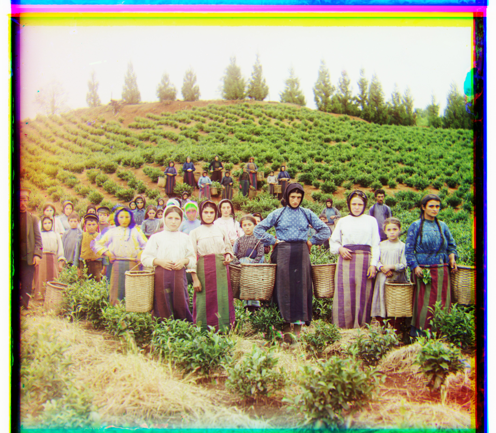
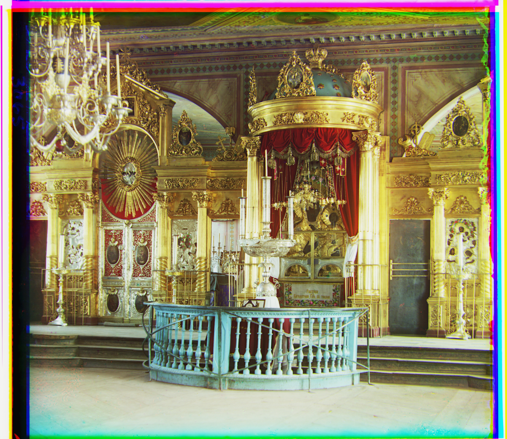
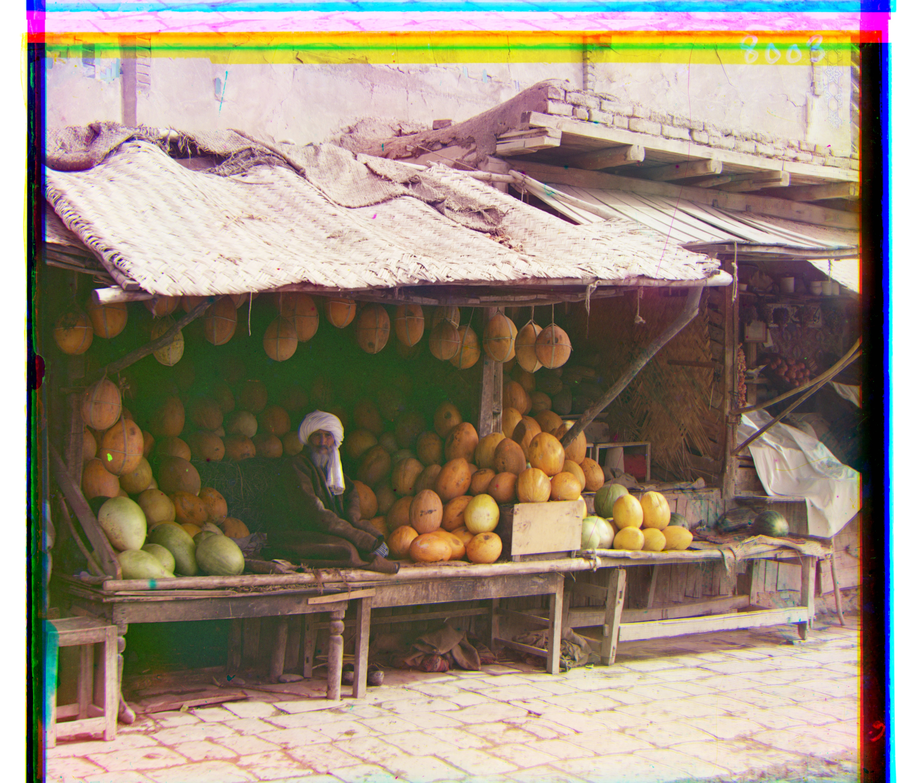
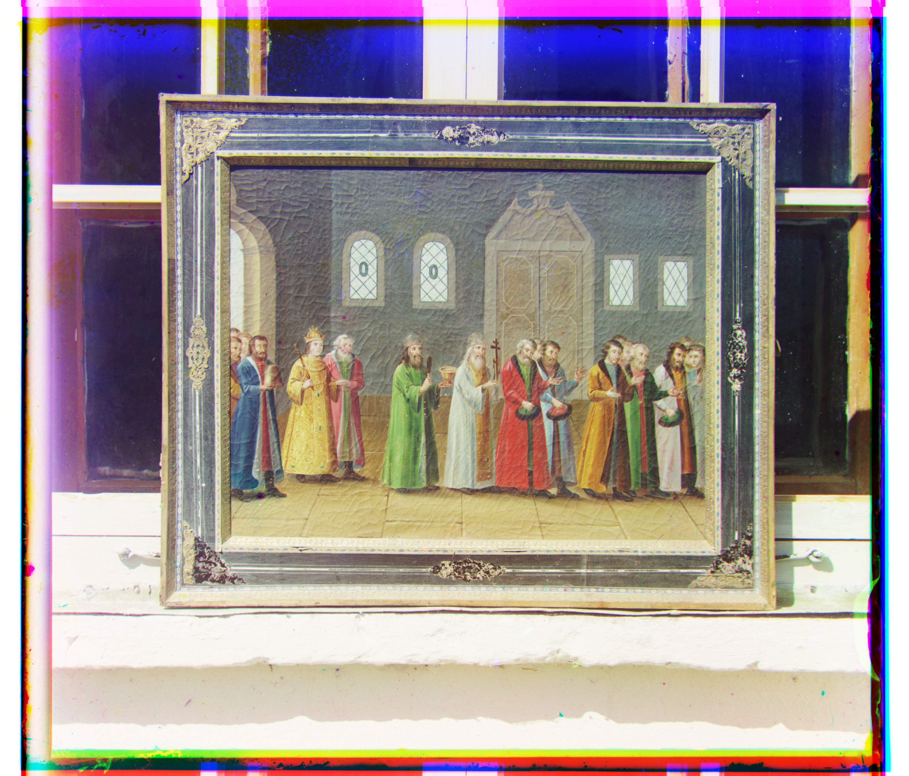
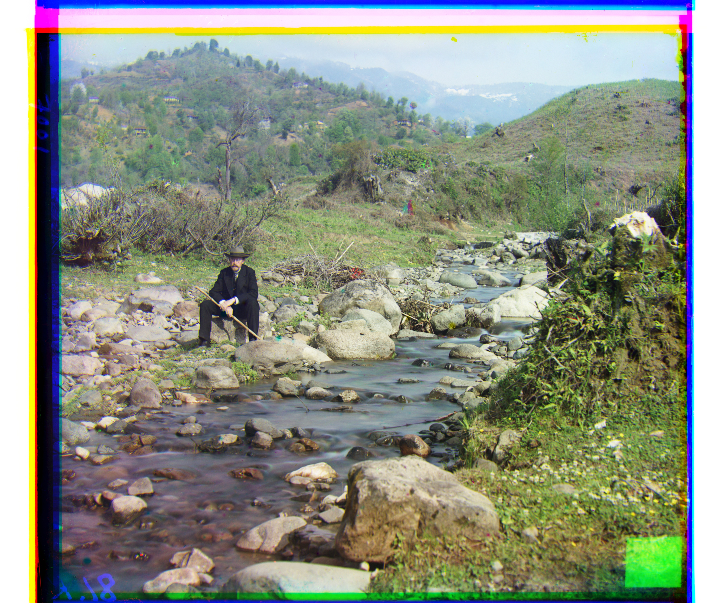
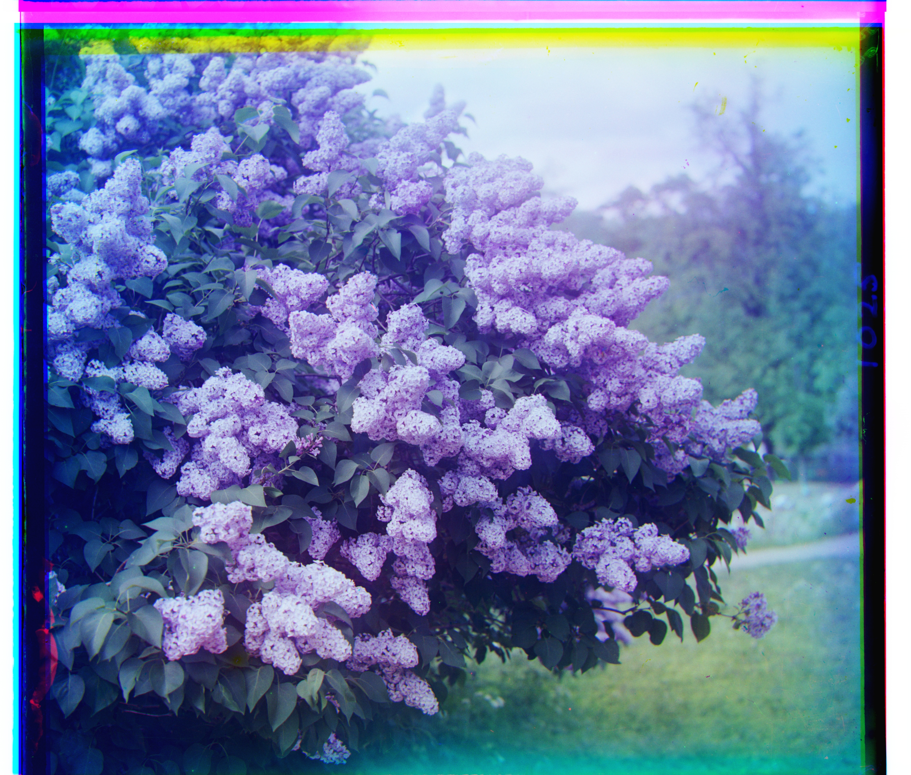
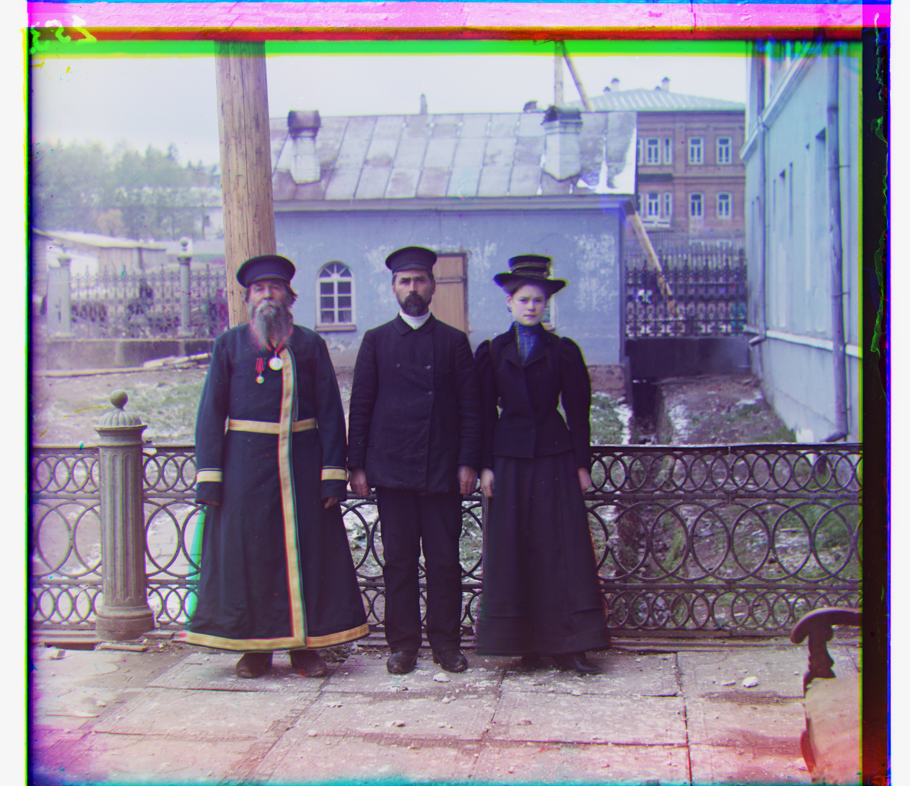
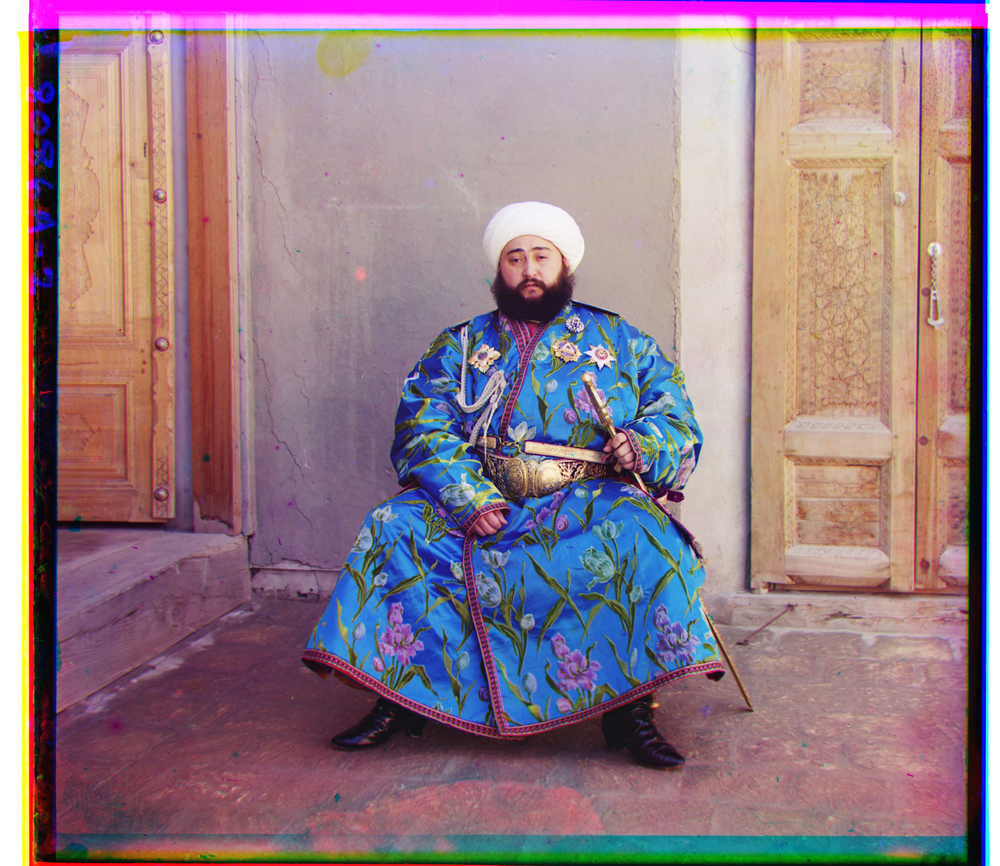
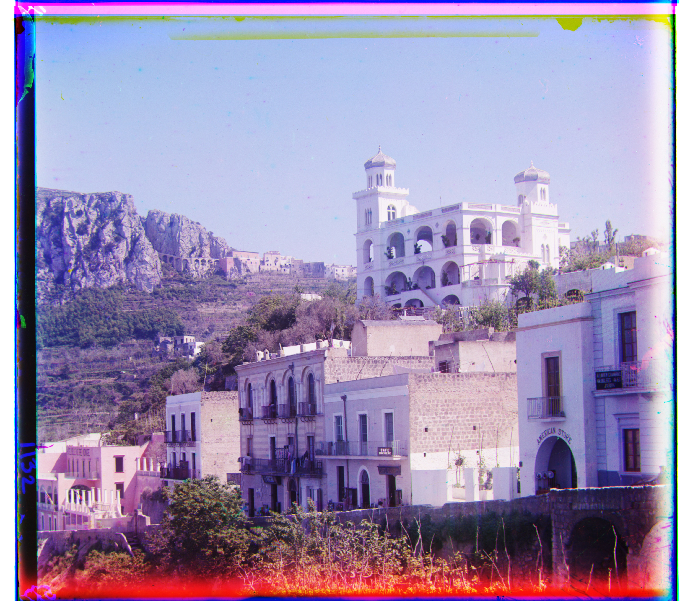
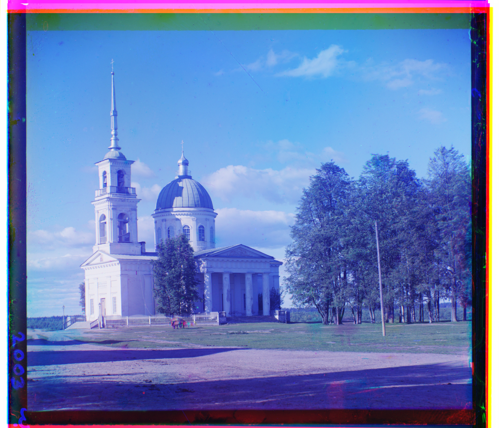

01 Images of the Russian Empire
CS180: Intro to Computer Vision and Computational Photography
Overview
Sergei Prokudin-Gorskii photographed the Russian Empire in color before color film existed, by exposing each scene three times through a red, a green, and a blue filter onto a single glass plate. The digitized scans are three stacked grayscale images. Stacking them directly doesn't reconstruct the photograph, because the camera shifted between exposures. This project recovers the color image by searching for the translation that best aligns the green and red plates onto the blue one.
Part 1 — Single-Scale Alignment
For the low-resolution scans, I searched over every displacement in [-15, 15] on both
axes (961 candidates) shifting the plate with np.roll and scoring each
position against the blue channel. The best scoring displacement wins.
Choosing a metric
I used normalized cross-correlation. The three plates are separate exposures through different filters, so their absolute brightness levels differ; L2 distance charges a penalty for that constant offset on every pixel, which can outweigh alignment indicators. NCC subtracts each image's mean and normalizes its magnitude before taking the dot product, so uniform brightness and contrast differences cancel out and only the structure is compared.
Cropping the borders
The glass plates have black and white strips along their edges from the scanning process. These don't move with the photographic content, so including them in the score biases the search toward whatever keeps the borders overlapping. I discard 12% from each side before scoring, using only the interior of the plate.


Part 2 — Multi-Scale Pyramid Alignment
The high-resolution scans are roughly ten times larger in each dimension, so the same physical camera drift becomes a displacement of over a hundred pixels. Searching a window that large means tens of thousands of candidate offsets, each evaluated across millions of pixels, which is too slow. Instead I solve the problem at a small scale, where the displacement is only a few pixels, and refine upward.
How the pyramid works
pyramid_align recurses: it halves both images and calls itself until the
smaller dimension drops below 200 pixels, where a plain [-15, 15] search is cheap and
sufficient. Coming back up, each level doubles the offset it received from below,
applies it to the plate, and then runs a small [-2, 2] search to correct the rounding
error introduced by the doubling. The returned displacement is the sum of the scaled
estimate and the local refinement. I downsampled with
skimage.transform.rescale with anti-aliasing enabled, rather than
discarding every other pixel, which would alias.
Results
Displacement vectors for the green and red channels relative to blue, in (x, y).
| image | green (x, y) | red (x, y) |
|---|---|---|
| cathedral | (2, 5) | (3, 12) |
| monastery | (2, −3) | (2, 3) |
| tobolsk | (3, 3) | (3, 6) |
| church | (4, 25) | (−4, 58) |
| emir | (24, 49) | (41, 106) |
| harvesters | (17, 60) | (14, 125) |
| icon | (17, 41) | (22, 89) |
| ilemselga | (7, 40) | (11, 131) |
| melons | (10, 81) | (14, 177) |
| religious painting | (3, 28) | (7, 69) |
| self portrait | (29, 79) | (37, 177) |
| siren | (−6, 49) | (−24, 96) |
| three generations | (14, 53) | (11, 111) |
| wharf | (−7, 15) | (−16, 82) |











Matching red to blue failed on this image, since the offset came back very large and changed wildly depending on how deep the pyramid recursed, while green stayed stable at (24, 49). That instability showed that matching red to blue was not optimal. The Emir's robe is brilliant blue, so it's nearly white through the blue filter and nearly black through the red. NCC rewards pixels on the same side of their image's mean, but at the correct alignment the robe is strongly positive in blue and strongly negative in red, so those pixels push the score down. The fix was to match red onto green instead, since they're adjacent in the spectrum and the robe doesn't invert between them, then add green's offset to get red relative to blue.
My Own Selections
Three more plates from the Library of Congress collection, run through the same pipeline with the same parameters.


